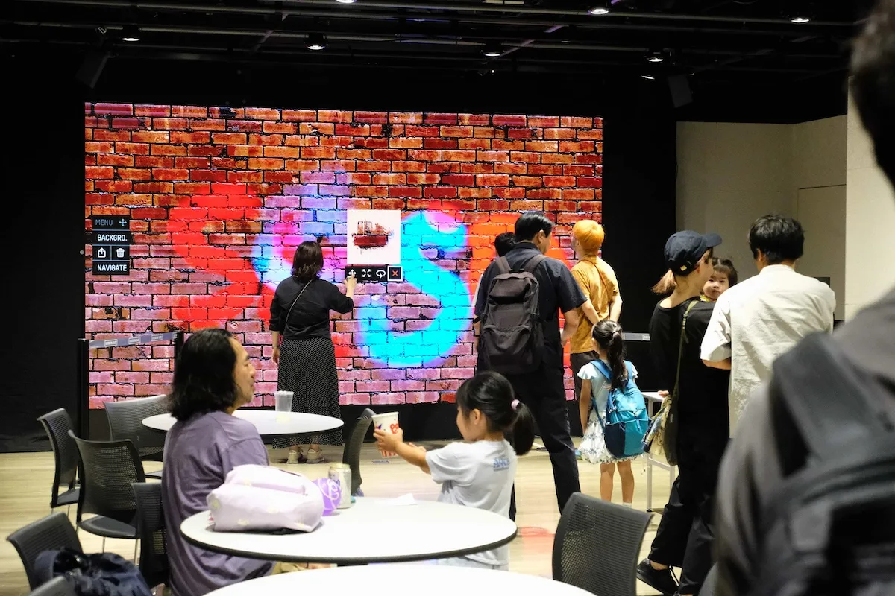
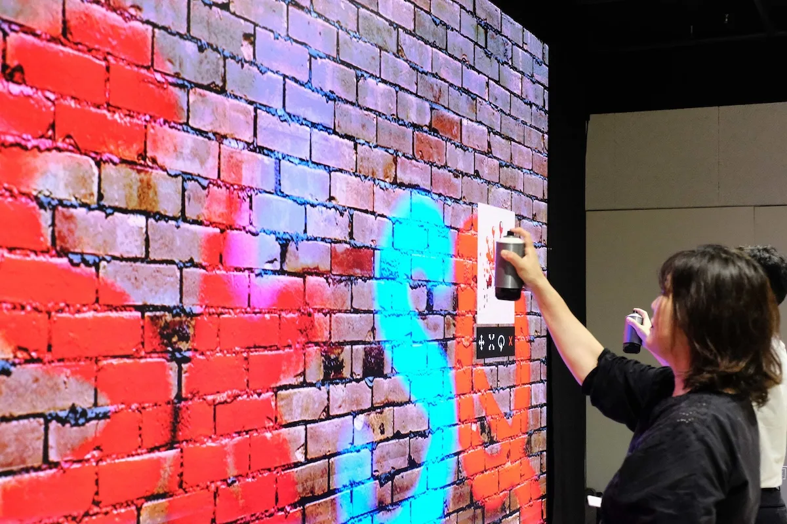

Yukatas, Bon Odori,
and a spray can.
- Event
- BON CAST.
(Shibuya Cast summer festival,
7th year) - When
- August 8, 2025
Tokyo, Japan - Venue
- Shibuya Cast
Space Garden - Partner
- In partnership with
mellifera
Shibuya Cast's summer festival, seven years running — Bon Odori, workshops, food stalls, and a free Graffiti+ digital spray art wall right in the middle of it. Guests painted in yukatas, and the best pieces went up on display at Shibuya Cast afterward.
BON CAST. is Shibuya Cast's massive summer event — back for its seventh year and packed with everything a Tokyo summer festival should be: Bon Odori dancing, workshops, food stalls, and much more. Graffiti+ brought the digital spray art, set up as a free, walk-up experience anyone could try — no reservation, no barrier.
The pairing landed exactly the way it should. On one side, a centuries-old summer tradition and a courtyard full of people in yukatas; on the other, a spray can in hand and a wall that responds like the real thing. Kids, parents, festival-goers who'd never held a can — everyone stepped up and made something. It's the same premise we run everywhere, dropped into one of the most alive street cultures in the world.
What made this one special: the work didn't disappear when the festival ended. The finished pieces were put on display at Shibuya Cast afterward — the guests' own graffiti living on in the space long after the food stalls packed up.
The project was delivered in partnership with mellifera. Read Shibuya Cast's own event page and festival recap.
Eighteen years. Six continents. One idea, done right.
For eighteen years, Graffiti+ has been putting real creative tools in people's hands — in public, at scale, and always with cultural integrity.
Born from the roots of graffiti culture and built for anyone willing to pick up a custom spray can, the platform turns festivals and public spaces into shared canvases where writers and first-timers paint together in real time. From their home in Vancouver to projects across six continents — including Macau, Seoul and now Tokyo — Graffiti+ brings authentic, participatory experiences to audiences everywhere.
A summer-festival crowd in yukatas, painting graffiti that stayed up on the wall long after the dancing stopped.

